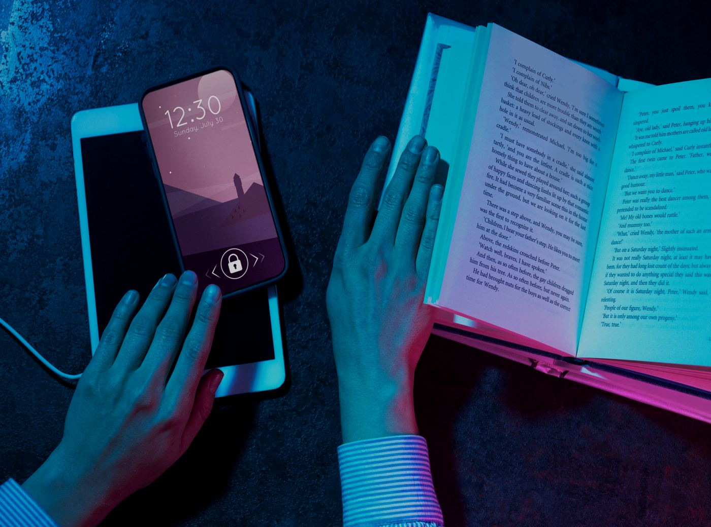
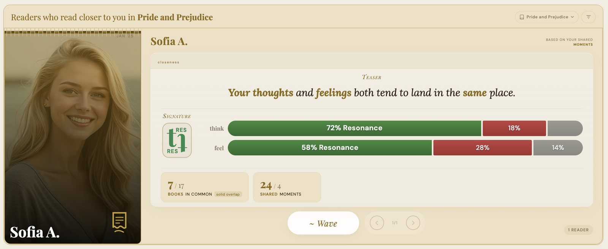
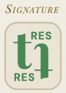
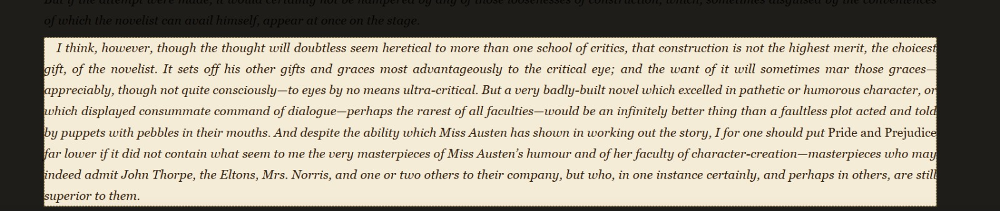

Reading, Reflecting, and Socializing app
Momento discovers Close Readers: the readers who were moved by the same passages as you.
For every passage you both capture, each of you leaves a momento: your own thoughts and feelings about it. Set side by side, they show where the two of you are Resonant, where you are Contradicting, and where you are Diverging.
You can then become Close Readers with them, and start reading and capturing moments together.
Reading is declining globally. Either books are being heard or they are untouched. Both are kicking the art form out of the world.
In this fast-paced world, the rewards of reading are buried deep under the social media pile.

What if your reflections on what you read shaped who you meet?
I
Chapter I
Read Moments Worth Sharing is not just Momento's tagline. It is the bones, too.
A warm and private library of books to capture passages that move you.
All your captured passages become Moments. Add your own thoughts and feelings to make them momentos.
Your momentos silently find readers worth being close to.
Weighed by AI
As you shape your Close circle here, sharing becomes more genuine than performative.
Reinforcement Learning
II
Chapter II
Each interpretation is decomposed into weighted sub-claims, scored across Resonate, Contradict and Diverge independently for thought and feeling, then ranked against other readers by a reinforcement learning model that improves with every interaction.
Begins withInterpretation
gemini-2.5-flash
Breaks each reader's interpretation into weighted sub-claims, each assigned an emotional mode.
Breaking down the momentos
gemini-2.5-flash
For each matched pair of sub-claims, Think and Feel questions are answered, each contributing to a final Resonate, Contradict or Diverge score.
Think + Feel, scored per pair
pure python
Combines all sub-claim scores into final Think and Feel R/C/D percentages, with a dominant result and a confidence for each reader pair.
Weighted average, dominant R/C/D, confidence
Final score = (compatibility × w₁) + (reinforcement × w₂)
New users rank purely on compatibility. The reinforcement weight starts at zero. As users explore, wave and connect, the weights update automatically to surface the readers who matter most.
New user: w₁ = 1.0, w₂ = 0.0. Weights update with every interaction.
Ends atThe Worth page


The tʃ glyph appears on every profile card in Worth. It is the visual form of the interpretive bond between two readers, filled with colour to show their Resonance, Contradiction and Divergence across Think and Feel.
Readers write honestly because the platform is designed to protect that honesty.
Appendix
All interpretations are anonymously processed via Google Gemini. Your name and identity are never shared.
The word momento itself carries meaning in multiple languages.
In Italian and Spanish it means moment, an instant in time. In English it echoes memento, an object kept as a memory. The platform name lives at the intersection of both: capturing the moment and making it something you carry forward.
The upright t is Think, the analytical dimension of interpretation. The inverted ʃ is Feel, how a passage lands in the body. Together they form two hands reaching toward the same book from opposite sides.
The t and ʃ together form a rectangle of negative space at their centre. That rectangle is the passage waiting to be captured.

The tʃ glyph appears on every profile card in Worth. Green for Resonance. Red for Contradiction. Grey for Divergence.